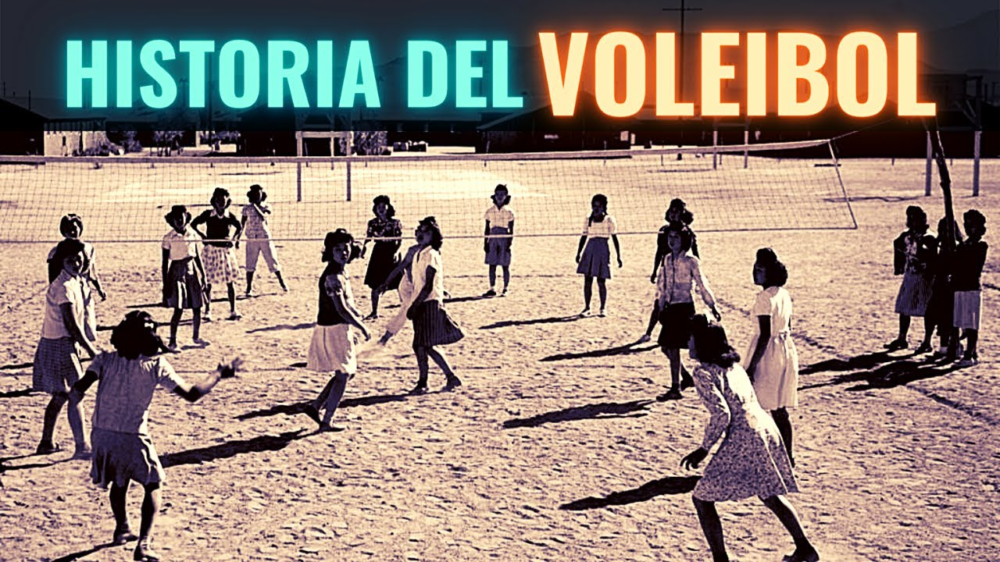

Historia

El voleibol fue creado el 9 de febrero de 1895 por William
George Morgan, entrenador deportivo de la Asociación
Cristiana de Jóvenes (YMCA) en Holyoke. Morgan había
realizado sus estudios en el Colegio de Springfield de la YMCA
donde conoció a James Naismith quien, en 1891, había inventado el
juego del baloncesto. El voleibol fue ideado en principio como una
alternativa más sosegada al baloncesto, pues aunque este se adaptaba
bien a los jóvenes, los miembros de mayor edad requerían un juego menos
intenso. Inicialmente lo denominó Mintonette. Por tanto el baloncesto y el
voleibol se inventaron al final del siglo xix en dos ciudades, Holyoke y
Springfield, separadas por solo 16 km y ambos deportes surgieron en la
Asociación Cristiana de Jóvenes (YMCA) difundiéndose rápidamente a nivel
internacional por todas sus organizaciones asociadas.12 Fue diseñado para
gimnasios o lugares cerrados y también se puede jugar al aire libre.
Se trataba de un juego por equipos, que guardaba semejanzas con el tenis o
el balonmano. Morgan desarrolló también las primeras reglas, las que
contemplaban un campo de juego de 7,62 m × 15,24 m (25 pies × 50 pies) y
una red de 1,98 m de altura (6 pies con 6 pulgadas). El número de jugadores
era ilimitado,
como así mismo la cantidad permitida de contactos con el
balón. En caso de una jugada de saque erróneo, existía una
segunda oportunidad, tal como en el tenis.12 Con motivo de
la conferencia de todos los entrenadores deportivos del YMCA
realizada en Springfield a comienzos del año 1896, Morgan
presentó el nuevo juego y encontró buena resonancia entre sus
colegas.12 Debido a que la pelota se juega directamente en el
aire, sin que toque el suelo (lo que en inglés se denomina
volley), Alfred Halstead propuso el nombre de volley ball.
Esta propuesta se aprobó y el juego se denomina en inglés
hasta hoy de igual manera, pero desde 1952 comenzó a escribirse
en una única palabra: volleyball.12 Posteriormente, las reglas
también sufrieron algunas modificaciones. El primer balón
fue diseñado especialmente a petición de Morgan por
la firma A. G. Spalding & Bros. de Chicopee, Massachusetts.